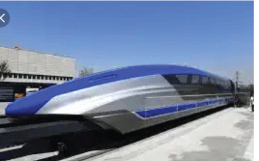

LATEST

More than a decade ago, a couple of researchers briefly popularized the idea of constructing an undersea transatlantic maglev railroad that would link New York and London, Brussels, or Paris in just a few hours. They magnetic levitation train were roundly attacked by naysayers who questioned the estimated nearly $200 billion cost, the safety and the security of a 3500-mile long maglev vacuum tube spanning the Atlantic. But such blue-sky notions would unquestionably provide a radical new means of quickly delivering both freight and passengers across a crucial international travel corridor. The idea was first put forth by Ernst Frankel, now a professor emeritus of ocean and mechanical engineering at MIT and the late Frank Davidson, an MIT researcher who happened to play a lead role in facilitating and developing the cross channel (chunnel) high-speed rail link between London and Paris. The superconducting train MAGLEV, magnetic levitation, sits on the terminal station on a seven kilometer, four mile, test track at the government-owned Railway Technical Research Institute in Miyazaki, southern Japan (AP Photo/Itsuo Inouye) The superconducting train MAGLEV, magnetic [+] For his part, Frankel still thinks he and Davidson’s original idea is sound, although vast economic and technical hurdles remain. We got interested in this after we laid a 1000-foot translucent pipe on a football field at MIT; we created a vacuum and shot tiny toy trains through it at speeds of about 1000 mph, Frankel told me. Ideally, says Frankel, the neutrally-buoyant tubes would lie about 150 feet below the surface; tethered to the bottom with spring loaded wires anchored to the bottom. You lay the tube on the surface, he says, and then anchors pull the tube down to the required depth. Alternating electric currents that interact with the repulsive and attracting forces of electromagnetic coils laid along the side of the track actually propel the train forward. But a transatlantic undersea maglev train would arguably make a great way to cross the pond. Amortization would indeed be a long-term proposition, requiring some sort of public-private investment scheme, but the end result would allow for seamless travel between Manhattan and central London. “We would expect maglev train speeds of three hundred to four hundred mph,” said Frankel. “If we were able to evacuate the tube completely we could achieve supersonic speeds, which would mean three to four hours travel time between New York and London.” Theoretically, he says, if we could maintain a perfect vacuum in the tubes, you could get 1200 mph. Frankel says a transatlantic maglev train would carry about 80 passengers per car; or a total of about 800 passengers for a ten car train. But Frankel says there is one major technical hitch. That is if the North Atlantic continues its warming trend; he says the potential exists for southerly icebergs to wreak havoc on the tube. To avoid icebergs, the tube would have to lie 500 to 700 feet below the surface. But much farther south and Frankel says, you would risk running into the deepest part of the North Atlantic which would make it very difficult to anchor the tube with tethers.
However, if such a venture were successful across the North Atlantic, the concept could be exported elsewhere in Europe — across the Baltic Sea from Malmo, Sweden to Hamburg or Berlin; or across the Mediterranean from Rome to Nice, France. Or in Asia, from Singapore to Hong Kong; or across the Sea of Japan from South Korea to Japan. The world needs such grand infrastructure projects now more than ever. Although the advent of new supersonic, even hypersonic, flight is all well and good, given the globe’s ever-burgeoning populations, we need radical new land- and sea-based alternatives for both commercial freight and passenger travel. As the skies become ever more crowded with drones, dirigibles, flying cars, general aviation and commercial aircraft, it’s time for some creative high-speed transportation ingenuity. HyperloopOne is preparing to test its own version of a high-speed evacuated (or vacuum) maglev tube train concept next month in Las Vegas. Although Elon Musk came up with the hyperloop concept, arguably a next-generation version of Davidson and Frankel’s own maglev concept, HyperloopOne emphasizes that Musk has no involvement with their company.* But perhaps the next step for Frankel and Davidson’s sea-based idea is a new study for a $12 billion maglev vacuum tube between New York and Boston. A submerged maglev train running along the Cape Cod Canal to Long Island and into New York’s East River at 380 mph, says Frankel, would mean a trip from Boston to Manhattan could be made in 40 minutes or so. CODE - Belize6
... BOUYANCY BAZOOKA: THE GRANDEST INVENTION EVER!!, DESIGNED BY A NIGERIAN
BOUYANCY BAZOOKA: THE GRANDEST INVENTION EVER!!, DESIGNED BY A NIGERIAN